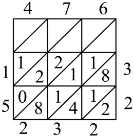
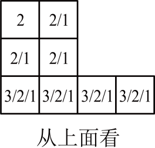
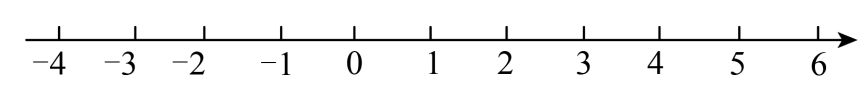
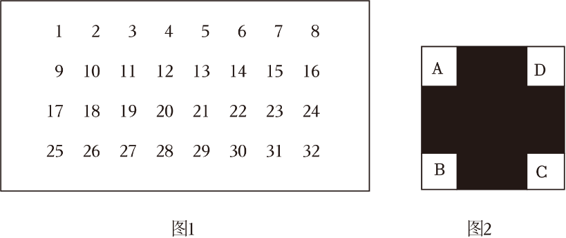
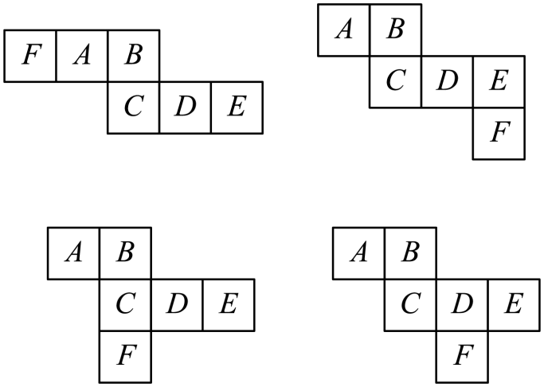
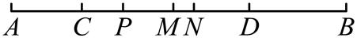
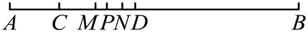

七年级数学上学期期中模拟卷·拔尖卷
【北师大版2024】
参考答案与试题解析
第Ⅰ卷
一．选择题（共10小题，满分30分，每小题3分）
1．（3分）（2025·湖北十堰·三模）几种液体的凝固温度（标准大气压）如下表：其中凝固温度最低的是（ ）
液体 | 水银 | 酒精 | 水 | 乙醚 |
凝固温度（℃） | −39 | −114 | 0 | −117 |
A．水银 B．酒精 C．水 D．乙醚
【答案】D
【分析】本题考查有理数比较大小，熟练掌握比较有理数大小原则“正数大于零，零大于负数，负数比较大小，绝对值大的反而小”是解题的关键．
把四种液体的凝固温度进行比较，即可解答．
【详解】解：∵−39=39 ，−117=117，−114=114，
又∵39<114<117
∴−117<−114<−39<0，
∴凝固温度最低的是乙醚，
故选：D．
2．（3分）用一个平面去截六棱柱，截面形状不可能是（ ）

A．三角形 B．圆 C．四边形 D．六边形
【答案】B
【分析】本题考查六棱柱的截面．六棱柱的面是八个平面，截面与六棱柱面相交可得到三至八边形，不可能是圆形．
用平面去截六棱柱时可得到三至八边形，不可能得到圆．
【详解】解：用平面去截六棱柱时，
A．平面最少与三个面相交得三角形；
B．平面不可能与面相交，不可能得到圆；
C．平面与四个面相交得四边形；
D．平面与六个面相交得六边形．
故选：B．
3．（3分）若1+2x2+2y−3=0，则xy=（ ）
A．16 B．1 C．±1 D．−18
【答案】D
【分析】本题考查了平方数非负性，绝对值非负性，根据几个非负数的和等于0，则每一项都等于0列式是解题的关键．
根据非负数的性质列式求出x、y的值，然后代入代数式进行计算即可求解．
【详解】解：∵1+2x2+2y−3=0，
∴1+2x=0，y−3=0，
解得：x=−12，y=3，
∴xy=−123=−18，
故选：D．
4．（3分）（24-25七年级上·全国·期末）已知a、b互为相反数，c、d互为倒数，m的绝对值为1，p是数轴上到原点距离为1的数，那么p2024−cd+a+babcd+m2+1的值是（ ）
A．3 B．2 C．1 D．0
【答案】B
【分析】本题主要考查了相反数、绝对值、有理数的乘方、代数式求值等知识点，掌握相关运算法则成为解题的关键．
根据互为相反数的两个数的和等于0可得a+b=0，互为倒数的两个数的乘积是1可得cd=1，再根据绝对值的性质和数轴求出m、p，然后代入代数式进行计算即可得解．
【详解】解：∵a、b互为相反数，
∴a+b=0，
∵c、d互为倒数，
∴cd=1，
∵m的绝对值为1，p是数轴到原点距离为1的数，
∴m=±1，p=±1，
∴p2024=1，m2=1
∴p2024−cd+a+babcd+m2+1
=1−1+0ab+1+1
=1−1+0+1+1
=2．
故选：B．
5．（3分）如图是一块带有圆形空洞和矩形空洞的小木板，则下列物体中最有可能既可以堵住圆形空洞，又可以堵住矩形空洞的是（ ）

A．正方体 B．球 C．圆锥 D．圆柱体
【答案】D
【分析】本题中，圆柱的俯视图是个圆，可以堵住圆形空洞，它的正视图和左视图是个矩形，可以堵住方形空洞．
【详解】根据三视图的知识来解答．圆柱的俯视图是一个圆，可以堵住圆形空洞，而它的正视图以及侧视图都为一个矩形，可以堵住方形的空洞，故圆柱是最佳选项．
故选D．
【点睛】此题考查立体图形，本题将立体图形的三视图运用到了实际中，只要弄清楚了立体图形的三视图，解决这类问题其实并不难．
6．（3分）（2025七年级上·全国·专题练习）如图，小明将画在纸上的数轴对折，把表示−3的点与表示1的点重合，此时与表示−2025的点重合的点表示的数是（ ）

A．2024 B．2023 C．2022 D．2021
【答案】B
【分析】本题主要考查了数轴上两点之间的距离，解题的关键是熟练掌握数轴上两点间距离公式．
先求出折痕处的点表示的数为−3+1÷2=−1，然后再根据数轴上两点间距离公式进行解答即可．
【详解】解：∵将画在纸上的数轴上对折，表示−3的点与表示1的点重合，
∴折痕处的点表示的数为−3+1÷2=−1，
∴与表示−2025的点重合的数是−1+−1−−2025=−1+−1+2025=−1+2024=2023，
故选：B．
7．（3分）（24-25七年级上·北京西城·期末）下列图形中可以作为一个长方体的展开图的是（ ）
A． B．
C． D．
【答案】C
【分析】本题考查的是长方体的展开图，解决本题的关键是根据长方体的表面展开图的特征进行判断即可．
【详解】解：A选项：两个底面在展开图的同一侧，折叠后左面缺一个面，故A选项不符合题意；
B选项：两个底面在展开图的同一侧，另一个底面的位置缺一个面，故B选项不符合题意；
C选项：展开图可以折叠成一个完整的长方体，故C选项符合题意；
D选项：展开图的右面缺一个底面，故D选项不符合题意．
故选：C．
8．（3分）将1，2，3，4，…，60这60个自然数，任意分成30组，每组两个数，将每组的两个数中的任意一个数记做a，另一个数记做b，代入代数式a−b+a+b中进行计算，求出结果，30组分别代入后可求出30个结果，则这30个值的和的最大值是（ ）
A．2730 B．1565 C．1735 D．1830
【答案】A
【分析】本题考查了去绝对值，整式的加减，代数式求值，数字类规律题，根据题意化简代数式是解题的关键．
设各组中的数的a比b大，然后去掉绝对值号化简为2a，所以当30组中的较大的数a恰好是31到60时．这30个值的和的2倍最大，再根据求和公式列式计算即可得解．
【详解】解：设这两个数的较大数为a，较小数为b，即a>b，
则 a−b+a+b=a−b+a+b=2a，
∴30组的和等于30个较大数的和的2倍，
则这30个值的和的最大值=2×31+32+⋯+60=2×31+60×302=2730．
故选A．
9．（3分）（24-25八年级上·重庆秀山·期末）在5个字母a，b，c，d，e中（均不为零），不改变字母的顺序，在每相邻两个字母之间都添加一个“+”或者一个“-”组成一个多项式，且从字母a，b之间开始从左至右所添加的“+”或“-”交替依次出现，再在这个多项式中，任意添加两个括号（括号内至少有两个字母，且括号中不再含有括号），添加括号后仍只含有加减运算，然后再进行去括号运算，我们称为“添减括号操作”．
例如：a+b−c+d−e=a+b−c−d−e，a+b−c+d−e=a+b−c−d+e．
下列说法：
①所有的“添减括号操作”共有7种不同运算结果；
②不存在两种“添减括号操作”，使它们的运算结果求和后为0；
③存在“添减括号操作”，使其运算结果与其未加括号之前的多项式相等．
其中正确的个数是（ ）
A．0 B．1 C．2 D．3
【答案】C
【分析】本题主要考查整式的加减运算、括号添等知识点，掌握整式的加减运算法则成为解题的关键．
先根据题意列举出此操作的所有结果，即可判定①；所有结果中字母a的系数恒为1，两结果相加a的系数为2，无法为零，即可判定②；通过合理添加括号可使结果与原式相同，正确．
【详解】解：①初始多项式符号交替排列，如a+b−c+d−e．添加两个括号后，可能的结果包括：1． 原式：a+b−c+d−e；2．添加括号如a+b−c+d−e，结果为a+b−c−d−e；3．添加括号如a+b−c+d−e，结果为a+b−c−d+e；同理，符号排列为a−b+c−d+e时，类似操作产生3种结果．总共有3+3=6种不同结果，故①错误．
②无论括号如何添加，所有结果中字母a的系数始终为+1．若存在两种操作结果相加为0，则a的系数需为0，矛盾．故②正确．
③例如，添加括号a+b−c+d−e，去括号后与原式a+b−c+d−e相同．故③正确．
综上，正确的说法为②和③，共2个．
故选C．
10．（3分）（24-25九年级上·重庆丰都·期末）“铺地锦”是我国古代一种乘法运算方法，可将多位数乘法运算转化为一位数乘法和简单的加法运算．如图1所示的“表格算法”，图1表示613×54，运算结果为33102．图2表示一个三位数与一个两位数相乘．下列说法：①m=6；②n=6；③y=7；④运算结果大于16000．根据图1的运算规律判断其中正确的有（ ）

A．1个 B．2个 C．3个 D．4个
【答案】A
【分析】本题主要考查了数字变化的规律及有理数的混合运算，理解题中所给运算方式是解题的关键．
根据图1，理解“铺地锦”这一运算方法，再据此对图2进行计算，并对所给说法进行判断即可．
【详解】解：由题知，
zm=18，zn=12，
则z=2或3或6．
当z=2时，m=9，n=6；
当z=3时，m=6，n=4；
当z=6时，m=3，n=2；
又因为xn=8，ym=10c+1，
所以z=6，m=3，n=2，
所以x=4．
由ym=10c+1得，
y=7，c=2．
故①②错误，③正确．

所以运算结果为15232．
故④错误．
故选：A．
二．填空题（共6小题，满分18分，每小题3分）
11．（3分）如图，在单位长度是1的数轴上，点A和点C所表示的两个数互为相反数，则点B表示的数是 .

【答案】﹣2
【分析】根据图示，点A和点C之间的距离是6，据此求出点C表示的数，即可求得点B表示的数.
【详解】∵点A和点C所表示的两个数互为相反数，点A和点C之间的距离是6
∴点C表示的数是﹣3，
∵点B与点C之间的距离是1，且点B在点C右侧，
∴点B表示的数是﹣2
故答案为﹣2
【点睛】本题为考查数轴和相反数的综合题，稍有难度，根据题意认真分析，熟练掌握数轴和相反数的相关知识点是解答本题的关键.
12．（3分）（24-25七年级下·黑龙江绥化·期末）用“→”，“←”定义新运算：对于任意有理数a，b，都有a←b=−a和a→b=b，例如：3←2=−3，3→2=2，则(2025←2023)←(2023→2024)= ．
【答案】2025
【分析】本题主要考查了相反数，根据题意，先计算括号内的运算，再根据新定义运算的规则进行解答即可．
【详解】解：(2025←2023)←(2023→2024)
=(−2025)←2024
=2025．
故答案为：2025．
13．（3分）将图1周长为4a+20的矩形剪开做成图2的“直角尺”（不重叠无缝隙），用此直角尺测得图3中小正方形DEFG的边长为a+2，则AB的长为 （用含a的式子表示）．

【答案】a+5/5+a
【分析】本题主要考查了整式加减的应用，正方形的性质与矩形的周长，掌握相关知识是解题的关键．由题可知AD+DE+EF+FC+BC+AB=4a+20，利用正方形的性质可得DE=EF=DG=GF，AB=BC=AG=GC，而AD+DG=AG，GF+FC=GC，则有4AB=4a+20，求解出即可．
【详解】解：由题意得：AD+DE+EF+FC+BC+AB=4a+20 ，
在小正方形DEFG和正方形ABCG中，
DE=EF=DG=GF，AB=BC=AG=GC，
又∵AD+DG=AG，GF+FC=GC，
∴4AB=4a+20，
∴AB=a+5，
则AB的长为a+5．
故答案为：a+5．
14．（3分）黑龙江省第五届旅游发展大会将于2023年夏季在大庆市举办，为“迎旅发”，创建美丽城市，九年级学生设计了正方体废纸回收盒，如图所示，将写有“庆”字的正方形添加到图中，使它们构成完整的正方体展开图，共有 种添加方式．

【答案】4
【分析】根据正方体的表面展开图的特征，即可解答．
【详解】解：将写有“庆”字的正方形分别放在“建”、“设”、“美”、“丽”的上方均可构成完整的正方体展开图，
所以，共有4种添加方式，
故答案为：4．
【点睛】本题考查了几何体的展开图，熟练掌握正方体的表面展开图的特征是解题的关键．
15．（3分）（24-25六年级上·全国·期末）用若干个大小相同的小正方体搭一个几何体，从左面看和从上面看得到的形状图如图所示，则搭一个这样的几何体最少需要 个小正方体 ，最多需要 个小正方体．

【答案】 12 20
【分析】本题考查几何体的三视图画法．在从上面看到的图形上结合从左面看到的图形填上对应的数字，再判断最多和最少即可．
【详解】解：如图所示：

由图可得，搭一个这样的几何体从上面看到的图形第一层最少数量2+1=3，最多数量2+2=4；第二层最少数量2+1=3，最多数量2+2=4；第三层最少数量3+1+1+1=6，最多数量3+3+3+3=12；
∴最少需要3+3+6=12需要个小正方体 ，最多需要4+4+12=20个小正方体．
故答案为：12；20．
16．（3分）（24-25七年级下·北京顺义·期末）某市将举办“创意与科创成果”主题展览．距离展览开幕还有7天，有四个不同的展区需要布置展品．布置每个展区需要一定数量的志愿者连续合作若干天完成，所需的志愿者人数（单位：人）和天数（单位：天）如下：
展区 | A | B | C | D |
志愿者人数 | 3 | 5 | 4 | 2 |
天数 | 4 | 3 | 2 | 5 |
（1）如果开幕前将每个展区都布置完成，主办方至少应招募 名志愿者；
（2）每名志愿者的补贴标准为：每天补贴m元，天数按照所有展区布置完成的天数计算．若主办方准备的补贴预算不超过50m元，且要在最短时间内完成工作，请问最少 天布置完成．
【答案】 7 5
【分析】本题考查了逻辑推理、有理数混合运算的应用、代数式的应用，理解题意是解题的关键．
（1）设1名志愿者布置1天展区为1个工作量，由题意得所有的工作量=3×4+5×3+4×2+2×5=45，结合距离展览开幕还有7天，计算可得主办方应招募不少于7名志愿者，再验证招募7名志愿者时符合题意，即可得出结论；
（2）由题意得，布置D展区需要2名志愿者连续合作5天，分析可知将每个展区都布置完成的时间不少于5天，当主办方需要在5天内完成工作，计算此时需要的志愿者人数，再结合补贴预算不超过50m元，即可得出结论．
【详解】解：（1）设1名志愿者布置1天展区为1个工作量，
则将每个展区都布置完成的工作量=3×4+5×3+4×2+2×5=45，
∵距离展览开幕还有7天，45÷7=637，
∴主办方应招募不少于7名志愿者，
当主办方招募7名志愿者时，并且给志愿者编号1−7，
编号为1,2,3的志愿者需工作7天，安排4天布置A展区，3天布置B展区，
编号为4,5的志愿者需工作7天，安排2天布置C展区，5天布置D展区，
编号为6,7的志愿者需工作5天，安排3天布置B展区，2天布置C展区，
∴招募7名志愿者可以在开幕前将每个展区都布置完成，符合题意；
∴主办方至少应招募7名志愿者，
故答案为：7；
（2）由题意得，布置D展区需要2名志愿者连续合作5天，
∴将每个展区都布置完成的时间不少于5天，
当主办方需要在5天内完成工作，
招募3名志愿者，安排4天布置A展区；
招募5名志愿者，安排3天布置B展区，其中4名志愿者再安排2天布置C展区；
招募2名志愿者，安排5天布置D展区；
则一共招募了3+5+2=10名志愿者，
所以需要提供志愿者补贴为10×5×m=50m元，符合题意；
∴要在最短时间内完成工作，最少5天布置完成．
故答案为：5．
第Ⅱ卷
三．解答题（共8小题，满分72分）
17．（6分）（24-25七年级下·全国·假期作业）计算下面各题．
①12+13+14+15×13+14+15+16−12+13+14+15+16×13+14+15
②18+19+110+111×19+110+111+112−18+19+110+111+112×19+110+111
【答案】①112；②196
【分析】本题考查了有理数的混合运算，熟练掌握运算法则，把相同的算式看作一个整体进行计算是解题的关键．
①设12+13+14+15=a，13+14+15=b，代入原式，根据运算法则进行计算即可；
②设18+19+110+111=a，19+110+111=b，代入原式，根据运算法则进行计算即可．
【详解】解：①设12+13+14+15=a，13+14+15=b，则
原式=b+16a−a+16b
=ab+16a−ab−16b
=16×a−b
=16×12+13+14+15−13+14+15
=16×12
=112．
②设18+19+110+111=a，19+110+111=b，则
原式=b+112a−a+112b
=ab+112a−ab−112b
=112×a−b
=112×18+19+110+111−19+110+111
=112×18
=196．
18．（6分）（24-25七年级上·山西临汾·阶段练习）随着“抖音”的兴起，很多农产品改变了原来的销售模式，实行了网上销售，一苹果种植户在抖音平台上直播销售苹果，周日结束时家中库存水果30箱、后续5天的直播中边采摘边销售，其采摘销售水果的情况如下表：
周一 | 周二 | 周三 | 周四 | 周五 | |
采摘（单位：箱） | 50 | 65 | 30 | 49 | 0 |
销售（单位：箱） | 30 | a | 53 | 39 | 33 |
与前一天库存相比（增加记作“+”，减少记作“−”） | +20 | +13 | −23 | b | −33 |
(1)直接写出a，b的值：a=______，b=______；
(2)哪一天直播销售结束时库存水果的数量最多，最多库存多少箱？
【答案】(1)52，+10
(2)周二直播销售结束时库存水果的数量最多，最多库存为63箱
【分析】本题主要考查了正负数的意义、有理数加减运算等知识，正确理解题意是解题关键．
（1）根据“采摘量−销售量=库存变化量”计算a，b的值即可；
（2）分别计算5天的直播结束时库存水果的数量，比较即可获得答案．
【详解】（1）解：a=65−13=52（箱），b=49−39=10（箱）．
故答案为：52，+10；
（2）解：周一直播销售结束时库存水果的数量为：30+20=50箱，
周二直播销售结束时库存水果的数量为：50+13=63箱，
周三直播销售结束时库存水果的数量为：63+−23=40箱，
周四直播销售结束时库存水果的数量为：40+10=50箱，
周五直播销售结束时库存水果的数量为：50+−33=17箱，
∵63>50>40>17，
∴周二直播销售结束时库存水果的数量最多，最多库存为63箱．
19．（8分）（24-25六年级上·山东烟台·期中）下图是由若干个小立方块所搭建几何体从正面看与从上面看的形状图．
(1)搭建这个几何体最少、最多各需多少个小立方块？搭建这个几何体需小立方块最少、最多可能有多种搭建方式，请你各拿出一种在从上面看的形状图的小正方形中用数字表示该位置所放小立方块的个数；
(2)搭建该几何体有多种搭建方式，请你画出其中三种从左面看的形状图．
【答案】(1)最少需要11个，最多需要17个，画图见解析
(2)见解析
【分析】本题主要考查从不同方向看小正方体的搭建的图形，解题的关键是：
（1）根据正面图和上面图可知，第一层有8个第二层最少有2个，最多有6个，第三层最少有1个，最多有3个，即可求解；
（2）根据（1）的结论，在从上面看的形状图中标上搭建所需要小正方体的个数，然后画出其从左面看的形状图即可．
【详解】（1）解：根据题意，得第一层有8个第二层最少有2个，最多有6个，第三层最少有1个，最多有3个，
∴搭建这个几何体最少需要8+2+1=11个、最多需要8+6+3=17个，
最少时，如图，
 （答案不唯一），
（答案不唯一），
最多时，如图，
（答案不唯一）．
（2）解：如图，
搭建如图时，

从左边看的形状图为：
搭建如图时，

从左边看的形状图为：

搭建如图时，

从左边看的形状图为：
（答案不唯一）
20．（8分）数轴上表示数a的点与原点的距离叫做数a的绝对值，记作a，数轴上表示数a的点与表示数b的点的距离记作a−b，如数轴上表示数5的点与表示数7的点的距离为5−7=2，5+7=5−−7表示数轴上表示数5的点与表示数−7的点的距离，a−5表示数轴上表示数a的点与表示数5的点的距离．根据以上材料回答下列问题：

(1)①若x−2=3，则x=_____，
②x−3+x+2=5，则x的取值为_____；
(2)x+1+x−2+x−3最小值为_____；
(3)求x−2020+2x−2021+3x−2022+4x−2023+5x−2024的最小值，并求出此时x的取值范围．
【答案】(1)①5或−1；②−2≤x≤3
(2)4
(3)15，当x=2023时其和取得最小值
【分析】本题考查绝对值的几何意义，数轴上两点之间的距离，正确掌握数轴上两点之间的距离的计算方法是解题的关键．
（1）①根据绝对值的几何意义，以及数轴上两点之间的距离求解，即可解题；
②根据绝对值的几何意义，以及数轴上两点之间的距离求解，即可解题；
（2）在数轴上表示x的点到三个点表示的数之间的距离之和最小，即x取三个数中间的数时，距离之和取最小值，据此求解即可；
（3）根据绝对值的几何意义，以及数轴上两点之间的距离，结合数轴直观可得当x=2023时其和取得最小值，即可解题．
【详解】（1）解：①x−2=3表示数轴上表示x的点到−1的距离为3，
∴x−2=3或x−2=−3，
解得x=5或−1，
故答案为：5或−1．
②x−3+x+2=5，表示的意义是数轴上表示x的点到表示3和−2两点的距离之和为5，可得−2≤x≤3，
故答案为：−2≤x≤3．
（2）解：x+1+x−2+x−3表示的意义是数轴上表示x的点到表示−1，2和3三点的距离之和，
∵ x+1+x−3，当−1≤x≤3时取得最小值4，
x−2≥0，当x=2时为0，
∴当x=2时，x+1+x−2+x−3取得最小值，
其最小值为：2+1+2−2+2−3=4，
故答案为：4；
（3）解：∵x−2020+2x−2021+3x−2022+4x−2023+5x−2024表示的意义是数轴上表示x的点到表示2020的点的距离，2个表示x的点到表示2021的点的距离，3个表示x的点到表示2022的点的距离，4个表示x的点到表示2023的点的距离，5个表示x的点到表示2024的点的距离之和，
相当于有1+2+3+4+5=15个分段点，
第8个分段点是2023，
∴当x=2023时其和取得最小值，
即x−2020+2x−2021+3x−2022+4x−2023+5x−2024=3+4+3+0+5=15．
21．（10分）把正整数1，2，3，4，…，排列成如图1所示的一个表，从上到下分别称为第1行、第2行、…，用图2所示的方框在图1中框住16个数，把其中没有被阴影覆盖的四个数分别记为A，B，C，D，设A=x．

(1)在图1中，2021排在第 行第 列；
(2)A−B+C−D的值是否为定值？如果是，请求出它的值；如果不是，请说明理由；
(3)将图1中的奇数都改为原数的相反数，偶数不变．
①设此时图1中排在第m行第n列的数（m，n都是正整数）为w，请用含m，n的代数式表示w；
②此时A+B−C−D的值是否为定值？如果是，请求出它的值；如果不是，请说明理由；
【答案】(1)253，5
(2)是定值，定值为0，理由见详解
(3)①当n是奇数时，w=−8m−1+n=−8m+8−n；当n是偶数时，w=8m−1+n=8m−8+n ②不为定值，理由见详解
【分析】本题考查规律型问题，需要用代数式表示出一般规律，并能构建等式通过解简易方程求值，解题的关键是理解题意，学会探究规律、利用规律解决问题，学会探究复杂问题中的等量关系．
（1）探究规律，利用规律即可解决问题；
（2）分别用含x的代数式表示出A、B、C、D，然后列出代数式，化简即可解决问题；
（3）①分奇数、偶数两种情形讨论即可；
②分奇数、偶数两种情形讨论，分别构建简单的等量关系即可解决问题．
【详解】（1）解：2021÷8=252⋯5，
∴2021排在第253行第5列，
故答案为：253，5；
（2）解：是定值，定值为0，理由如下：
设A=x，方框框住16个数，
则D=x+3,B=x+24,C=x+27，
∴A−B+C−D=x−x−24+x+27−x−3=0；
（3）
解：①当n是奇数时，w=−8m−1+n=−8m+8−n；
当n是偶数时，w=8m−1+n=8m−8+n；
②不是定值，理由吐下：
设A=x，方框框住16个数，
当C,D为奇数时，D=−x−3,B=x+24,C=−x−27，
此时，A+B−C−D=x+x+24+x+27+x+3=4x+54；
当C,D为偶数时，D=−x+3,B=x−24,C=−x+27，
此时，A+B−C−D=x+x−24+x−27+x−3=4x−54；
∴A+B−C−D的值不为定值．
22．（10分）如图是一个无盖正方体纸盒的表面展开图，请解答下列问题：

(1)若在图上补上一个同样大小的正方形F，便它能围成一个正方体，共有______种补法；
(2)请画出两种不同的补法；

(3)设A=a2+2a+1,B=4−b2,C=a2−1,D=23−a，若（1）中的展开图围成正方体后，相对两个面的代数式之和都相等，求E、F所代表的代数式．
【答案】(1)4
(2)见解析
(3)E=8，F=a2+b2+3
【分析】（1）根据正方体的展开图：一三二型，三三型，进行作答即可；
（2）补全图形即可；
（3）先确定对立面，再根据相对两个面的代数式之和都相等，列式计算即可．
【详解】（1）解：根据正方体的展开图：一三二型，有3种，三三型，有1种，
∴在图上补上一个同样大小的正方形F，共有4种补法．
故答案为：4；
（2）如图所示：（任选两种即可）

（3）由展开图可知：AD为相对面，CE为相对面，BF为相对面．
∵A+D=a2+2a+1+23−a=a2+2a+1+6−2a=a2+7，
∴E=a2+7−a2−1=8．
∴F=a2+7−4−b2=a2+b2+3．
【点睛】本题考查正方体的展开图以及确定正方体的相对面、整式的加减．熟练掌握正方体的11种展开图，是解题的关键．
23．（12分）任意一个正整数n都可以分解为两个正整数的乘积：n=p×q（p，q是正整数，且p≤q），在n的所有这种分解中，当q−p最小时，称p×q是n的最佳分解，并规定：Fn=pq．例如：3的最佳分解是3=1×3，F3=13，20的最佳分解是20=4×5，F20=45．
(1)直接写出：F2=___________；F9=___________；F12=___________；
(2)如果一个两位正整数t，交换其个位上的数与十位上的数得到新的两位数记为t′，且t′−t=18．
①求出正整数t的值；
②我们称数t与t′互为一对“吉祥数”，直接写出所有“吉祥数t”中Ft的最大值；
(3)在（2）条件下，在“吉祥数t”的中间再插入另一个“吉祥数p”组成一个四位数M，再在“吉祥数t′”中间插入“吉祥数p′”（p与p′互为一对“吉祥数”），又得到一个新的四位数N，请用字母表示四位数M、N，并求N−M的值．
【答案】(1)12，1，34
(2)①13，24，35，46，57，68，79；②57
(3)M=1001a+110b+22，N=1001a+110b+2200，2178
【分析】本题考查因式分解的应用，列代数式、整式的加减运算、一元一次方程的应用等知识点，理解题意、灵活运用所学知识解决问题是解题的关键。
（1）根据2=1×2，9=1×9=3×3，12=1×12=2×6=3×4，据此即可解答；
（2）①设t的十位上的数字为x，个位上的数字为y，据此得出10y+x−10x+y=18，即y=x+2，从而得出所有t的可能出现的值，然后分别求出Ft的值，确定其中的最大值即可解答；
（3）设t的十位上的数字为a，个位上的数字为a+2，设p的十位上的数字为b，个位上的数字为b+2，则t=10a+a+2,t′=10a+2+a，p=10b+b+2,p′=10b+2+b，易得M=1001a+110b+22，N=1001a+110b+2200，然后代入N−M计算即可解答．
【详解】（1）解：∵2=1×2，9=1×9=3×3，12=1×12=2×6=3×4，
∴F2=12；F9=33=1；F12=34．
故答案为：12，1，34．
（2）解：①设正整数t的十位上的数字为x，个位上的数字为y，
则10y+x−10x+y=18，即y=x+2，
所以t的可能的值为13，24，35，46，57，68，79．
②当t=13时，Ft=113；
当t=24时，Ft=46=23；
当t=35时，Ft=57；
当t=46时，Ft=223；
当t=57时，Ft=319；
当t=68时，Ft=417；
当t=79时，Ft=179．
所以Ft的最大值为57．
（3）解：设t的十位上的数字为a，个位上的数字为a+2，设p的十位上的数字为b，个位上的数字为b+2，
∴t=10a+a+2,t′=10a+2+a，p=10b+b+2,p′=10b+2+b
∴M=1000a+100b+10b+2+a+2=1001a+110b+22，
N=1000a+2+100b+2+10b+a=1001a+110b+2200，
∴N−M=1001a+110b+2200−1001a+110b+22 =2178
24．（12分）（24-25七年级上·江苏无锡·阶段练习）如图，点P是定长线段AB上一定点，点C，D分别从点P，B同时出发以acm/s，bcm/s的速度沿直线AB向左运动（点C在线段AP上，点D在线段BP上），其中a、b满足条件：a−1+b−3=0．运动的时间为ts，且点C，D运动到任一时刻，总有PD=3AC．

(1)直接写出：a=_____，b=_____；
(2)若AB=24cm，请求出AP的长；
(3)若点Q是直线AB上一点，且AQ−BQ=PQ，求PQAB的值；
(4)若C、D运动5秒后，恰好有AB=2CD，此时C点停止运动，D点继续运动（D点在线段PB上），M、N分别是CD、PD的中点，问MNAB的值是否发生变化？若变化，请说明理由，若不变，请求出MNAB的值．
【答案】(1)1，3
(2)AP=6cm
(3)PQAB的值为12或1
(4)不变，MNAB=116
【分析】本题考查了两点间的距离，能够根据点的运动情况，进行分类讨论是解题的关键．
（1）非负性求出a,b的值即可；
（2）根据题意，得到PB−3t=3AP−t，进而求解即可；
（3）分两种情况：当点Q在线段AB上时，当点Q在线段AB的延长线上时，分别求解即可；
（4）先求出PC,BD的值，进而求出AB的值，再分两种情况求出MN的值，进而求出MNAB的值即可．
【详解】（1）解：∵a−1+b−3=0，
∴a−1=0,b−3=0，
∴a=1，b=3；
（2）由（1）和题意可知：BD=3tcm,PC=tcm，
∵PD=3AC，
∴PB−BD=3AP−PC，
∴PB−3t=3AP−t，
∴PB=3AP，
∴PBAP=3，
∴AP=14AB=14×24=6cm；
（3）解：当点Q在线段AB上时，
∵AQ−BQ=PQ，
∴AQ=PQ+BQ，
∵AQ=AP+PQ，
∴AP=BQ，
由（2）知：AP=14AB，
∴BQ=14AB，
∴PQ=AB−AP−BQ=12AB，
∴PQAB=12；
当点Q在线段AB的延长线上时，
∵AQ−AP=PQ，
∴AQ−BQ=PQ=AB，
∴PQAB=1；
综上，PQAB的值为12或1；
（4）不变；
当AB=2CD时，点C停止运动，此时CP=5，BD=3×5=15，
由（2）可知，AP=14AB，
∴BP=34AB，
∴AB=2CP+DP=2CP+BP−BD=25+34AB−15，
∴AB=40；
①如图，当M，N在点P的同侧时

MN=PN−PM
=12PD−PD−MD
=MD−12PD
=12CD−12PD
=12CD−PD
=12CP
=52；
②如图，当M，N在点P的异侧时

MN=PM+PN
=MD−PD+12PD
=MD−12PD
=12CD−12PD
=12CD−PD
=12CP
=52．
∴MNAB=5240=116，
当点C停止运动，D点继续运动时，MN的值不变，
∴MNAB=116，值不变．